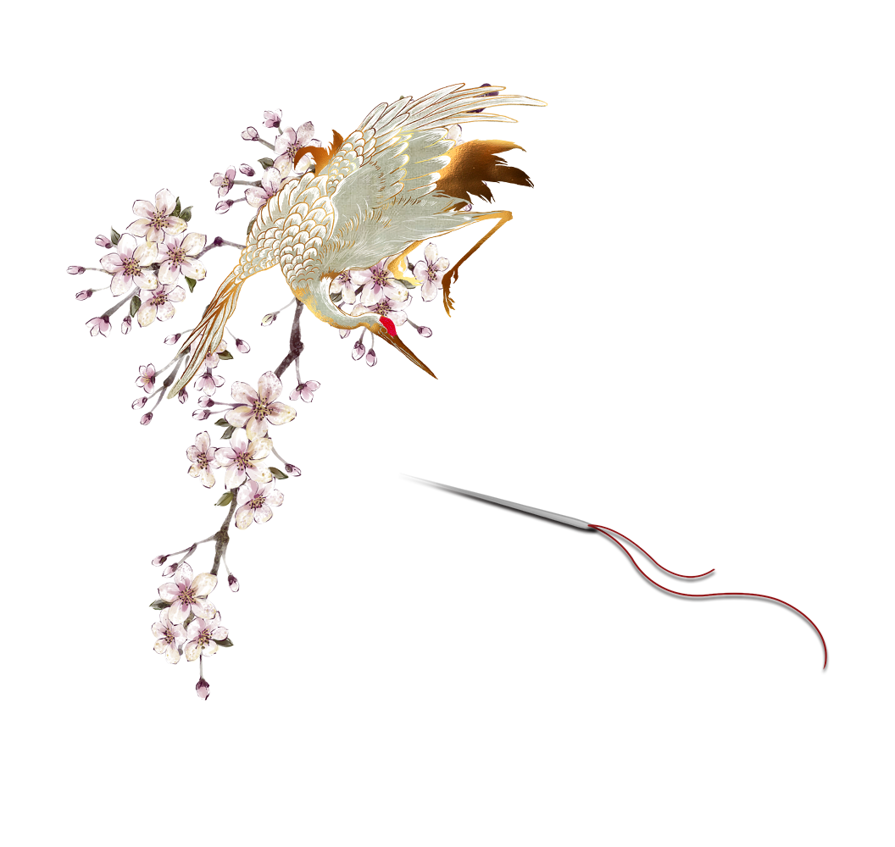

Explore Chinese Embroidery

Chinese embroidery has a long history, with its origins dating back to the Neolithic Age thousands of years ago. It had already taken shape in the Shang and Zhou dynasties, and became widely popular in the Han Dynasty due to the opening of the Silk Road. During the Tang and Song dynasties, embroidery technology reached its peak, with rich colors and exquisite techniques, and gradually formed two major systems: court and folk. During the Ming and Qing dynasties, the four famous embroidery styles of Suzhou embroidery, Hunan embroidery, Guangdong embroidery, and Sichuan embroidery each had their own characteristics and were widely used in clothing, decoration, and artworks. Since modern times, embroidery has not only been used in traditional clothing, but has also been integrated into fashion design, cultural and creative products, and has become an important part of China's intangible cultural heritage, showing its unique artistic charm and cultural value.
Chinese embroidery dates back to the Neolithic Age, with silk fabrics found in Majiabang and Liangzhu Culture sites from 5,000-6,000 years ago. During the Shang and Zhou Dynasties, oracle bone inscriptions recorded silk and embroidery, which became prominent in aristocratic clothing. By the Warring States Period, embroidery had advanced significantly, as seen in Chu tomb discoveries in Hunan. The Han Dynasty saw embroidery flourishes with the Silk Road's expansion, spreading Chinese craftsmanship globally. Exquisite embroidered textiles from Mawangdui Han Tomb highlight its use in clothing, curtains, and decorations.
During the Wei, Jin, and Southern and Northern Dynasties, Buddhist culture flourished, and embroidery was widely used for religious objects like Buddha statues and prayer flags. Different regional styles also emerged. The Tang Dynasty marked a golden age for embroidery, with dedicated court workshops producing exquisite royal garments and decorations, symbolizing noble status. Tang embroidery featured rich colors and intricate patterns, exemplified by the "Embroidered Guanyin Statue". In the Song Dynasty, Embroidery became more refined and realistic, developing the "painting embroidery" style, which mimicked ink paintings, as seen in works like "Five Hundred Arhat Statue". Folk embroidery also thrived during this time.
During the Ming Dynasty, embroidery was widely used in clothing, official uniform patches, screens, and daily items, with craftsmanship further refined. Regional styles like Suzhou, Guangdong, and Hunan embroidery began to take shape. The Qing Dynasty saw court embroidery reach its peak, with intricate techniques like "flat gold embroidery" and "pan gold embroidery" used in dragon robes, phoenix robes, and wall hangings. During this period, the four famous embroidery styles—Suzhou, Hunan, Guangdong, and Sichuan—were formally established, each developing its own artistic identity.
During the Republic of China period, embroidery became commercialized and integrated with Western craftsmanship, leading to new styles in clothing and decorations. After 1949, the government supported the preservation and innovation of embroidery, with Suzhou embroidery achieving lifelike precision and Hunan embroidery incorporating modern painting techniques. In the 21st century, embroidery is widely used in fashion, home decor, and cultural products, while intangible cultural heritage efforts are revitalizing traditional hand embroidery, giving it new life.